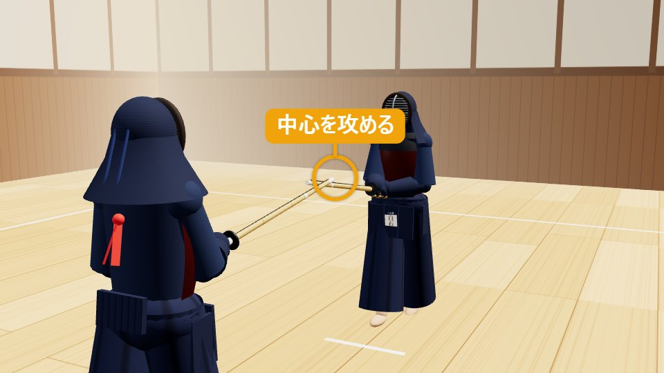
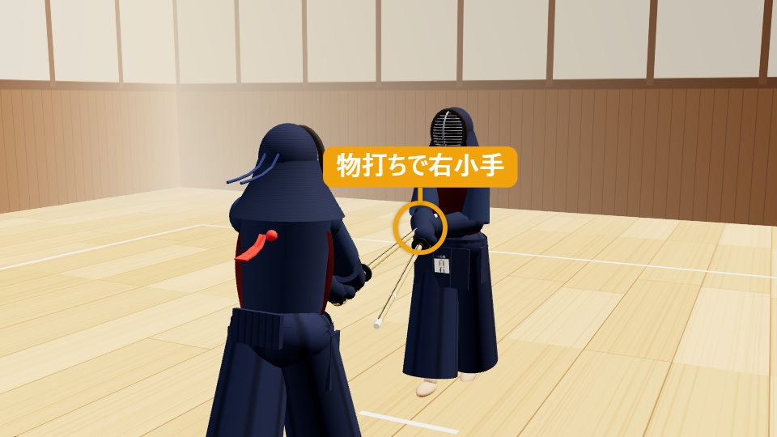
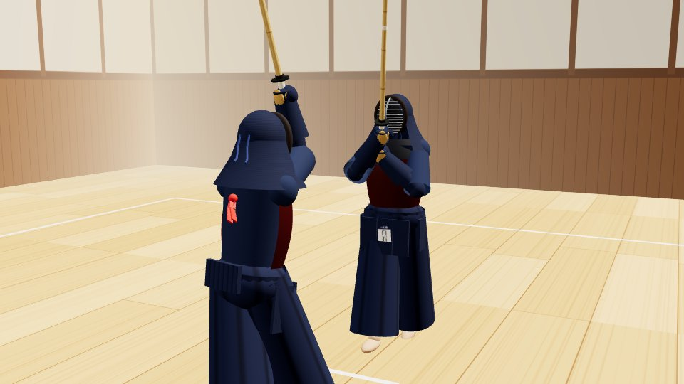
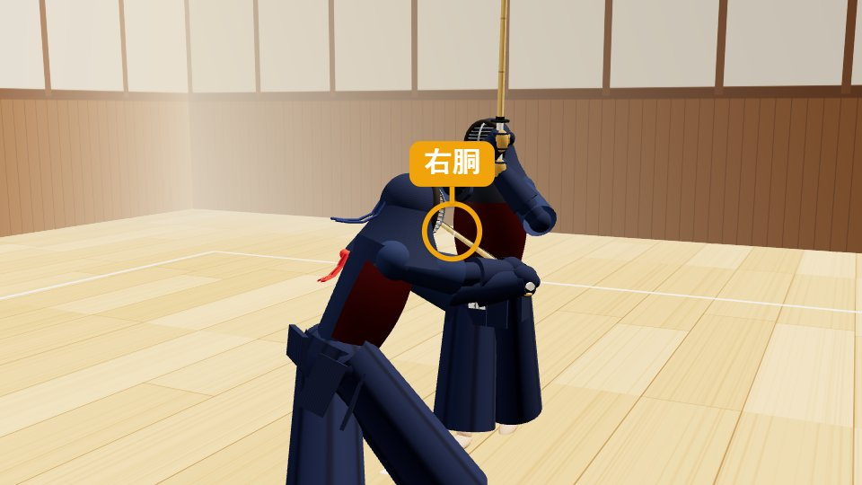
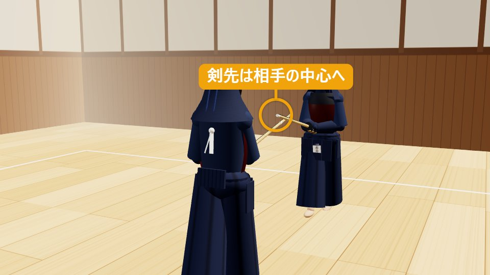

小手 → 胴こてどう
小手で手元を上げさせ、空いた胴へ。
1小手 → 胴の打ち方（動作）
ドラッグで回転・ホイールで拡大縮小
1構え・攻め合い
一足一刀の間合い。剣先で中心を攻める。
有効打突チェック — 再生に合わせて点灯します
- 竹刀の打突部一本目・二本目とも物打ちで打つ
- 充実した気勢「コテ」「ドウ」の発声
- 打突部位右小手 → 右胴
- 刃筋正しく胴は斜めに刃筋を通す
- 適正な姿勢胴では少し屈んで打つ
- 残心向き直って構える
分解して見る（5コマ）
-

STEP 1
構え・攻め合い
一足一刀の間合いで中段に構え、剣先で相手の中心を攻めます。
-

STEP 2
一本目：小手を打つ
小さく振りかぶり、右足から踏み込んで、物打ちで相手の右小手を打ちます（元立ちは竹刀を少し左下に傾けて、右小手を少し前へ差し出して打たせます）。一本取るつもりで鋭く打ちます。
-

STEP 3
手元の反応を見る
小手を打たれた相手が、手元を上げます。この反応が、胴が空く合図です。打った竹刀はすぐ真っすぐ上へ戻し、足は止めません。
-

STEP 4
二本目：胴を打つ
竹刀を真っすぐ上げたあと、手首を返して、相手の右肩のほうから斜め下へ斬るように、空いた右胴を物打ちで打ちます。少し膝を曲げ、上体を屈めて、「ドウ」と発声します。
-

STEP 5
抜けて残心
胴を打ったら止まらずに右へ抜け、向き直って剣先を相手の中心に向けます。
2小手 → 胴とは（概要）
小手→胴（こてどう）は、小手を打って相手の手元を上げさせ、空いた右胴を続けて打つ二段の連続技です。
小手を打たれると、相手は反射的に手元を上げたり、竹刀で小手を守ろうとしたりします。このとき胴が空くので、すかさず胴を打ちます。小手→面と並ぶ、基本的な二段技です。
一本目の小手が本気でなければ、相手の手元は動きません。二本目の胴は刃筋を通すことが重要で、連続の中でも雑にならないよう意識します。
- 分類
- しかけ技・二・三段の技
- 打突部位
- 右小手 → 右胴
- 機会
- 小手を打ったあと、相手の手元が上がる瞬間
- 難易度
- ★★☆（中級）
覚えておきたい言葉
3小手 → 胴を打つときのコツ（技を出す側） 掛かり手
一本目の小手を本気で打つ
「つなぎ」の小手では相手の手元が動きません。一本を取りにいく鋭い小手で、相手を反応させます。
打ったらすぐ竹刀を戻す
手の内を緩め、竹刀を素早く体の正面へ戻します。手元が下がったままだと、胴への移りが遅れます。
足を止めない
継ぎ足で連続した一つの動きにします。足が止まると相手に反応されます。
胴は刃筋を通す
連続技では胴がひらで当たりがちです。竹刀の向きを意識して、物打ちで打ちます。
相手の反応を見て打つ
手元が上がった・竹刀で小手を守ろうとした、その空きを逃さずに打ちます。反応がなければ、面など別の技に切り替えます。
止まらず抜けて、振り返る
打ち終えたら止まらず抜け、相手に向き直って構え直します。
よくある失敗
- 一本目が弱く、相手が反応しない
- 胴がひらで当たり、音が鈍い
- 小手のあとに足が止まる
- 打ったあとに止まる・背を向ける
4受ける側（元立ち）が気にすること 元立ち
小手→胴の稽古での受ける側（元立ち）は、小手を打たれたあとの反応で、胴が空く機会を作る役です。
小手を打たせる
手元を少し上げる・剣先を外すなどして、一本目の小手が打てる機会を作ります。
打たれたら手元を上げる
小手を打たれたあと、自然に手元を上げます。これが胴の空く合図になります。
間合いを一定に保つ
連続して打たれるため、下がりすぎず同じ間合いで受けます。
安全に受ける
小手は手首の部分で、胴は胴の面で受けます。肘や腕の内側を出さないよう気をつけます。
打たれたら体をさばく
胴を受けたら、相手が抜けられるよう体を少しさばきます。
ひと言フィードバック
「小手のあと足が止まった」「胴が刃筋通っていない」など気づきを伝えます。
受ける側の学び：小手を打たれて手元を上げると、胴が空くことが体で分かり、小手のあとの手元の管理の大切さを実感できます。
5小手 → 胴が一本になる条件・ならない理由
有効打突は、充実した気勢、適正な姿勢をもって、竹刀の打突部で打突部位を刃筋正しく打突し、残心あるものとする。
剣道試合・審判規則 第12条（全日本剣道連盟）
竹刀が当たっただけでは一本になりません。小手 → 胴の場合、6つの条件はそれぞれ次のように見られます。
| 条件 | ○ 一本になる小手 → 胴 | × 一本にならない例 |
|---|---|---|
| 充実した気勢 | 「コテ」「ドウ」の発声が、踏み込みや打突と一致している | 声が小さい・打った後に遅れて出す |
| 適正な姿勢 | 上体が崩れず、腰から前に出ている | 頭が突っ込む・体が傾く・腰が引ける |
| 竹刀の打突部 | 物打ち（剣先から約4分の1）で打っている | 竹刀の根元や中ほどで当たる |
| 打突部位 | 一本目は右小手、二本目は右胴を打っている | 小手が浅い・胴の上端や下端を外れる |
| 刃筋正しく | 打つ方向と竹刀の刃の向きが一致している | 竹刀の側面（ひら）で当たる・かすめるだけ |
| 残心 | 打った後に抜けるか下がって、構え直している | 打った後に止まる・竹刀を下ろす・背を向ける |
審判の判定
- 審判は3人（主審1人・副審2人）。2人以上が旗を上げると一本になります。
- 連続技では、一本目が有効打突なら一本目の時点で一本です。二本目は、相手の反応を受けて打たれたかどうかも見られます。
- 相手の打突と同時になった場合は、どちらが先に・より確かに決まったかで判断され、どちらも取られない（相打ち）こともあります。
小手 → 胴を一本にするコツ
小手が本気だから胴が決まる
一本目を鋭く打つほど、相手の手元が大きく動き、胴が空きます。
足を止めずにつなぐ
継ぎ足で一気につなぐと、相手は守る間がありません。
胴は最後まで刃筋を通す
連続の最後ほど雑になります。斜めに斬る意識を保ちます。
観戦のポイント：この3つが見えたら「一本」
- 一本目の小手のあと、足を止めず胴へつなげている
- 相手の手元が上がった瞬間に胴を打っている
- 打ったあと抜けて、剣先を相手に向けている